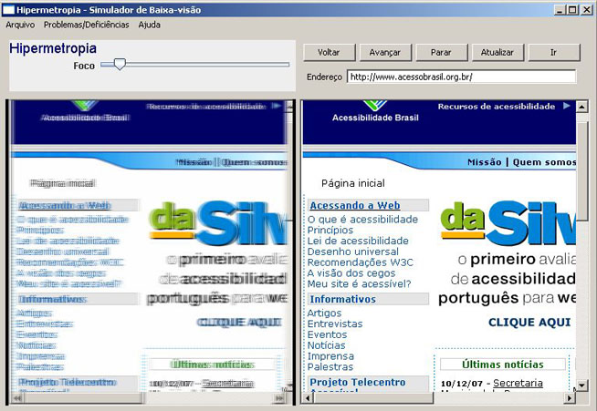
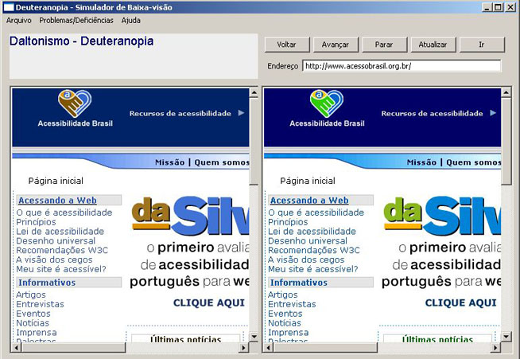
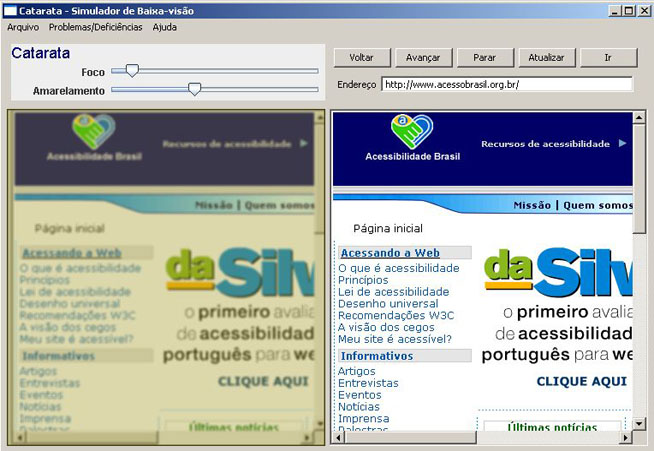
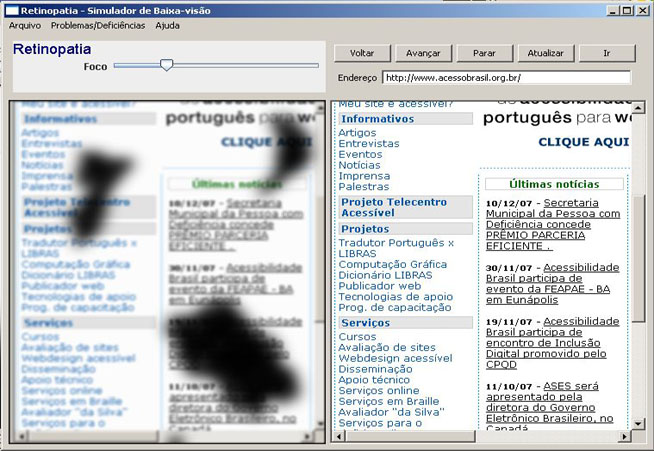

Simula algumas doenças ou incapacidades que afetam a visão. São elas: hipermetropia, miopia, daltonismo, catarata, glaucoma e retinopatia.
Menu Arquivo:
Salvar Imagem: Salva o conteudo em que se está simulando a doença ou incapacidade como uma imagem.
Sair: Fecha o simulador de baixa visão.
Problemas/Deficiências:






Link para descrição das incapacidades encontradas neste simulador